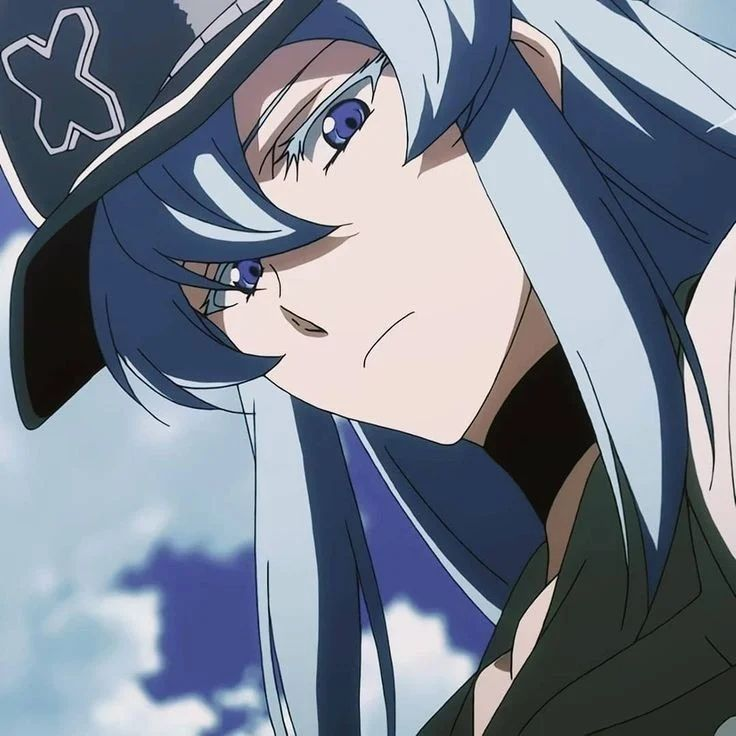
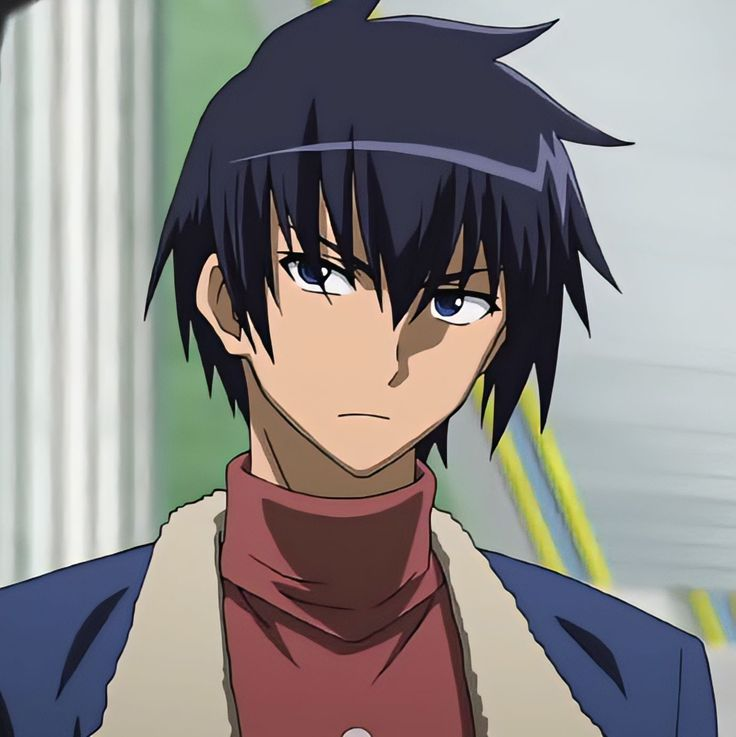
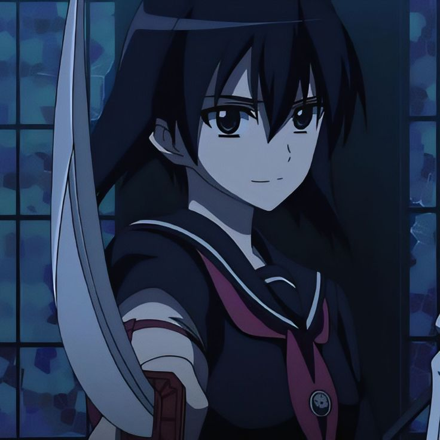
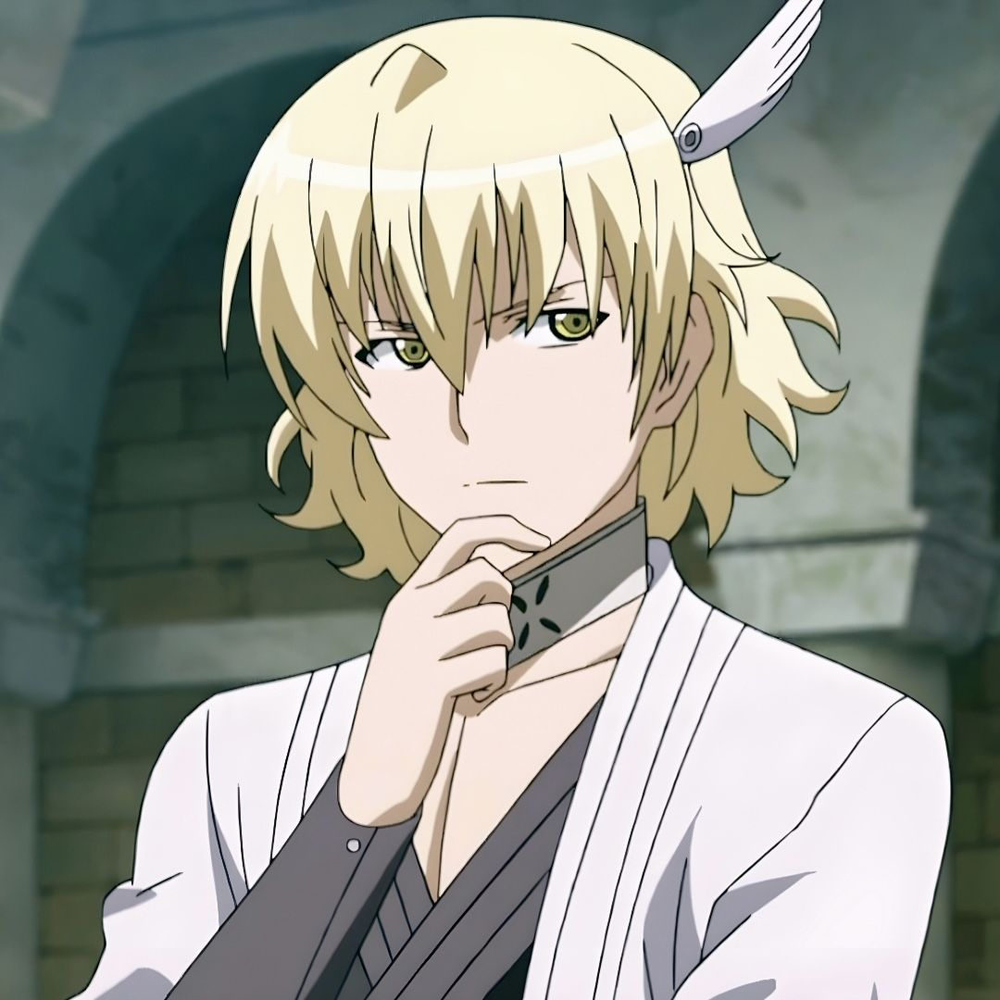
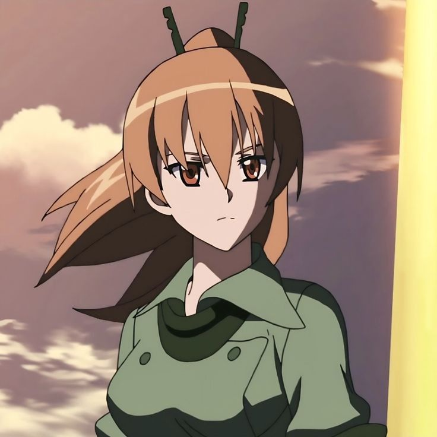
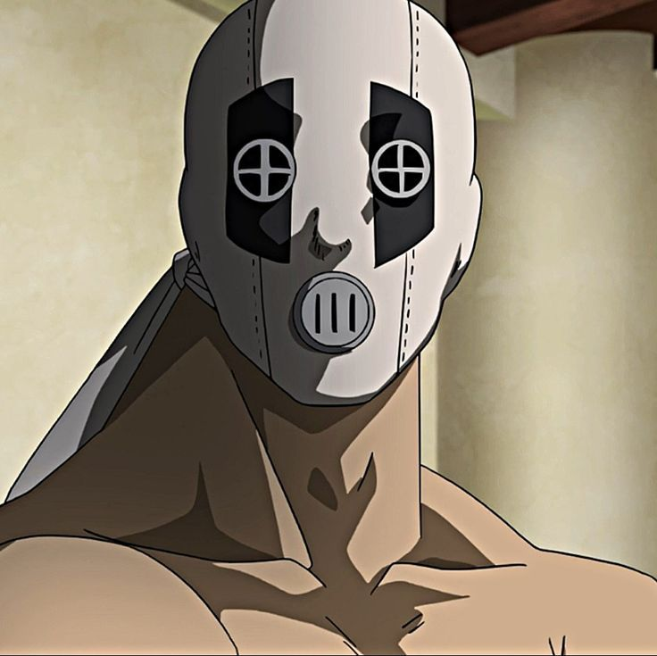
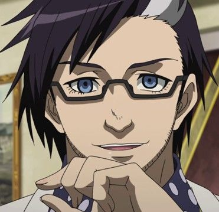

General Esdeath
Arma: Demon's Extract
A general mais poderosa e temida do Império. Consumiu o fluido demoníaco de um ser de gelo, obtendo controle absoluto sobre o gelo e a temperatura. Sua filosofia é simples: os fortes dominam os fracos. Apesar da crueldade em batalha, desenvolveu sentimentos genuínos por Tatsumi.

Wave
Arma: Grand Chariot
Ex-marinheiro com um senso de honra e justiça genuíno. Muitas vezes questiona internamente as ordens dos Jaegers, sentindo-se desconfortável com a brutalidade do grupo. Sua arma imperial Grand Chariot é uma armadura parecida com a Incursio, tornando seus confrontos com Tatsumi especialmente intensos.

Kurome
Arma: Yatsufusa
Irmã mais nova de Akame, separada dela quando crianças para servir ao Império. Usa a espada Yatsufusa para ressuscitar e controlar até oito corpos de inimigos mortos como marionetes. Viciada em drogas de combate fornecidas pelo Império, sua saúde se deteriora progressivamente.

Run
Arma: Mastema
Ex-professor que se juntou aos Jaegers com o objetivo específico de vingança, crianças sob seu cuidado foram massacradas por um nobre corrupto. Sua arma imperial Mastema gera asas que permitem voo e disparo de penas letais. Apesar de trabalhar para o Império, seus motivos são profundamente pessoais.

Seryu Ubiquitous
Arma: Coro
Soldada fanática com um senso de justiça distorcido e absoluto. Acredita cegamente que o Império representa o bem e que a Night Raid é o mal encarnado. Seu corpo foi extensamente modificado com armas ocultas, e sua arma imperial Coro pode crescer a proporções monstruosas.

Bols
Arma: Rubicante
Carcereiro e torturador do Império que serve como membro de suporte dos Jaegers. Sua arma imperial Rubicante é um lança-chamas de destruição em massa. Apesar da profissão brutal, é um pai e marido amoroso que luta para garantir o futuro de sua família, criando um dos contrastes mais trágicos do anime.

Dr. Stylish
Arma: Perfector
Cientista obcecado com a perfeição do corpo humano. Utiliza sua expertise para criar soldados biologicamente modificados e aprimorar as capacidades de combate dos membros dos Jaegers. Sua arma imperial Perfector potencializa sua velocidade e reflexos a níveis sobre-humanos. Considera batalhas como experimentos científicos.